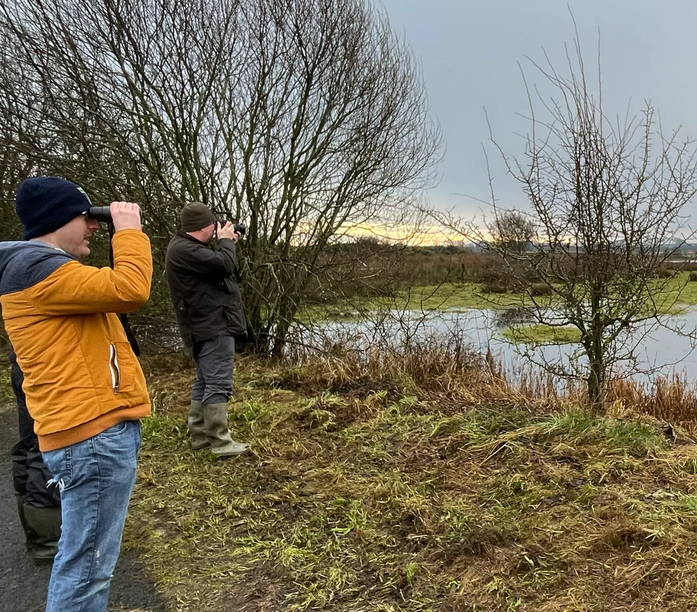

International Swan Census
Cornafulla Micro Reserve, located in the heart of Ireland’s Midlands, is delighted to participate in the International Swan Census (ISC), taking place over the weekend of January 17–18, 2026. This important survey forms part of the wider International Waterbird Census (IWC), a global initiative that monitors the health and trends of waterbird populations across Europe, Africa, and Asia.
Conducted every six years, the International Swan Census focuses specifically on Whooper Swans and Bewick’s Swans, providing vital data on their population sizes, distribution, and wintering habitats.
In January 2026, Cornafulla Micro Reserve will participate in the International Swan Census in line with national survey guidelines issued by BirdWatch Ireland, as coordinated by Aisling Kinsella, National Coordinator of the Irish Wetland Bird Survey (I-WeBS).
Our survey work will focus on the three designated Shannon Callows subsites identified by BirdWatch Ireland—Inchinalee, Cloonown (west of Long Island) and Derineel—using the official subsite codes and coordinates to ensure our data integrates seamlessly with the national database. In addition, while Cornafulla Bog is not currently a registered subsite, we intend to record swan activity there also, submitting precise coordinates (and map images where useful) so that these observations can still contribute meaningfully to the census.

The methodology we have been advised to use is straightforward and robust: at each location we will count all swans present, record whether birds are roosting or foraging (with time of day taken into account), note the habitat type, and age as many individuals as possible as adults or juveniles. By extending coverage across both official subsites and our own local knowledge areas, we aim to support BirdWatch Ireland’s coordinated census effort while ensuring a comprehensive picture of swan use of the wider Cornafulla /Shannon Callows (SAC) landscape.
Why the International Swan Census is Important
The International Swan Census is critical for understanding the migratory patterns and population trends of the Whooper Swan and Bewick’s Swan. These species migrate between Europe and Iceland, and their numbers and movements offer valuable insights into the health of wetland habitats across their range. The census also provides an important opportunity for citizen scientists, birdwatchers, and conservationists to contribute to global wildlife monitoring efforts.
Whooper Swan Trends and the 2026 Census
The 2020 Census revealed a significant increase in Whooper Swan numbers in Ireland, with a 24.9% rise in the Republic of Ireland and a 32% increase in Northern Ireland compared to the 2015 census. This brought the total number of Whooper Swans recorded in Ireland to 19,111, the highest number ever recorded in the country. However, while numbers increased in Ireland, they grew even faster in key sites in England, shifting the balance of the population. This reflects a shift in the wintering distribution, not a decline in Ireland’s importance.
In 2026, we will be monitoring whether this growth continues or stabilizes. Another key trend to watch is the movement of Whooper Swans within Ireland, with previous censuses showing a shift away from the west and north-midlands towards the south-midlands and north coast. Cornafulla Micro Reserve, located in the Midlands, is well-positioned to track these changes.
Bewick’s Swan Decline
Another significant trend is the decline of Bewick’s Swans in Ireland. In the 2020 Census, only 12 Bewick’s Swans were recorded, representing a nearly 50% decline from 2015. This decline is largely attributed to climate change and altered migratory patterns, with many Bewick’s Swans now migrating closer to their Russian breeding grounds. It is likely that Bewick’s Swans will continue to be a rare sight in Ireland, making any sightings in 2026 particularly notable.

Trends to Watch in January 2026:
• Whooper Swan numbers: Is Ireland still gaining Whooper Swans, or have the numbers stabilized?
• Shifts in wintering areas: While Whooper Swan numbers continue to rise in Ireland, we’re seeing more birds wintering in England, suggesting a change in wintering behaviour across the species' range.
• Movement within Ireland: Will the pattern of Whooper Swans moving away from the west and north of Ireland toward the midlands and north coast continue?
• Wintering habitats: Whooper Swans also use pasture fields and grasslands, which aren’t always covered by standard wetland surveys. It's essential to monitor these habitats to ensure a complete count.
• Absence of Bewick’s Swans: With a sharp decline in Bewick’s Swan numbers, their absence in 2026 would not be surprising, but any records would be significant.
The Role of Cornafulla Micro Reserve
At Cornafulla Micro Reserve, we are committed to supporting these global conservation efforts and will be closely monitoring the swans passing through our local wetlands. As a community, we encourage everyone to join us in this important task of collecting data that helps protect waterbird species and their habitats. Your participation, whether through volunteering or spreading awareness, makes a real difference in safeguarding these migratory birds for future generations.